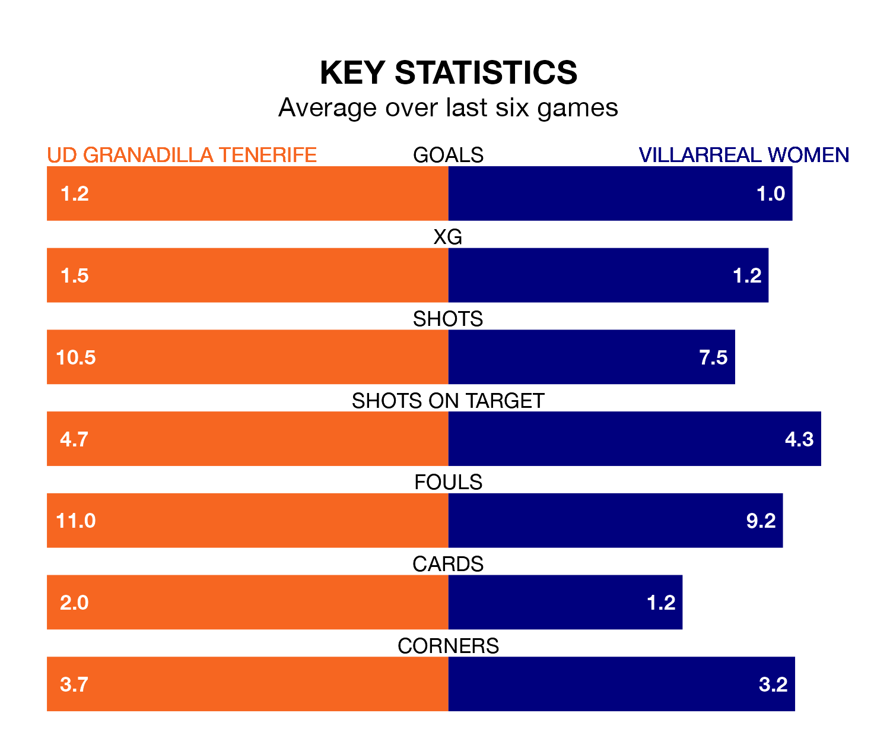

UD Granadilla Tenerife face Villarreal Women at the Estadio La Palmera on Saturday looking to secure a first win in eight Liga F games.
Granadilla Tenerife have lost three and drawn four matches since they last earned three points – against Granada Women on December 9.
They face a Villarreal side who have won three and drawn one over that time.
With 16 goals in 18 games so far this season, Villarreal are the league's third-lowest scorers with 0.9 goals per game. And they are conceding more than average, letting in 30 goals at a rate of 1.7 per game.
Granadilla Tenerife are also below average scorers, with 1.2 goals per game, compared to a league average of 1.6. They have conceded 1.5 goals per game.
In Aline Villares Reis, the hosts can rely on one of the league's safest pair of hands. She has kept four clean sheets in her 17 appearances this season in Liga F.
In the away side's net, Carmen Carbonell Gil has two clean sheets in 14 games. She has conceded a goal every 57 minutes, 10% more often than the 64 minutes between goals for Villares Reis.
In the last five years, Granadilla Tenerife and Villarreal have played each other on five occasions. Granadilla Tenerife won four of them and they drew once.
On average, Granadilla Tenerife scored 2.0 goals and Villarreal 0.6 in those matches.
Their last meeting was on November 25, when they played out a 1-1 draw.
Villarreal are 11th in the table after 18 games, of which they have won five and drawn four, earning 19 points.
Granadilla Tenerife are two places ahead of Villarreal in ninth, with five wins and five draws putting them on 20 points.
Granadilla Tenerife's last match was on February 18, a 2-1 loss against Real Madrid Women, with Rinsola Babajide getting the goal for Granadilla Tenerife.
Villarreal drew 1-1 with Real Sociedad Women last time out, on February 17, with Lucía Gómez García on the scoresheet.
Updated: 09:34 (UTC), 08/03/24